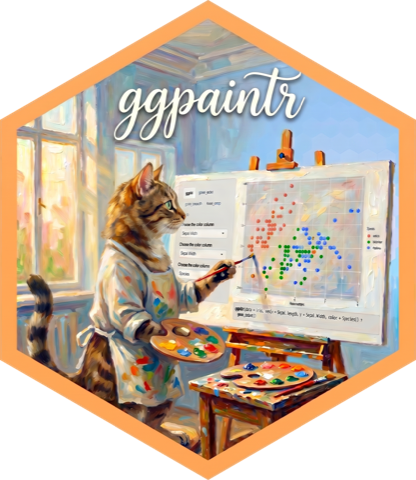

get all ui elements
controlUI.Rdget all ui elements
Usage
controlUI(
id,
defaultArgs,
mapping,
geom_args = NULL,
plot_settings = NULL,
extra_uiFunc = NULL,
extra_uiFuncArgs = NULL
)Arguments
- id
An ID string that corresponds with the ID used for all component of this
paintr_obj- defaultArgs
some default arguments passed to the ui functions
- mapping
keys of mapping
- geom_args
keys of geom_args
- plot_settings
keys of plot_settings
- extra_uiFunc
optional. A named list of extra functions provided by the user. For example
list(param1 = my_func1, param2 = my_func2)- extra_uiFuncArgs
optional. A list of function arguments provided by the user. Function arguments of one function should be formed in a list as one element of
extraFuncArgsFor examplelist(param1 = list(my_func1_arg1, my_func1_arg2), param2 = list(my_func2_arg1, my_func2_arg2))